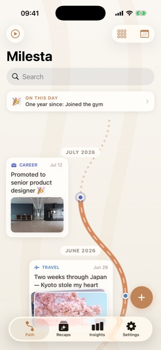
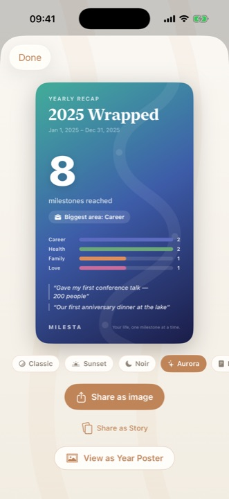
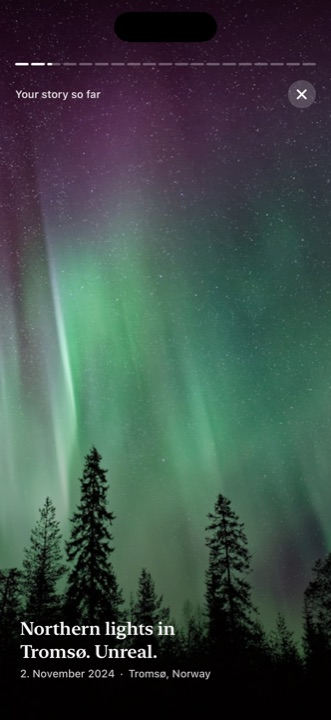
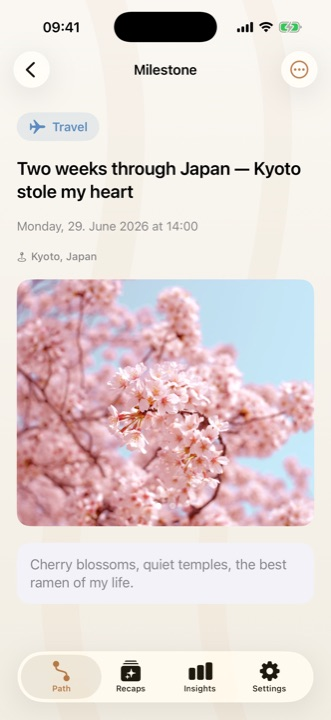
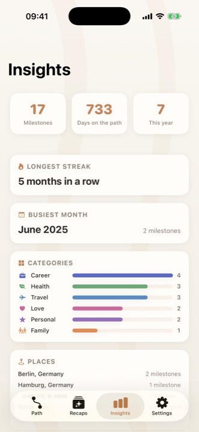
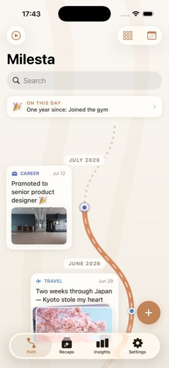
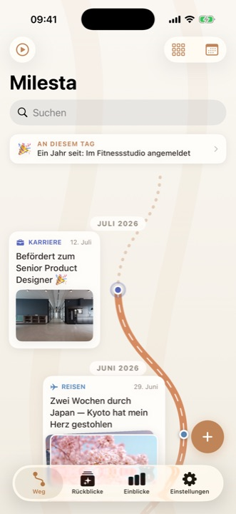
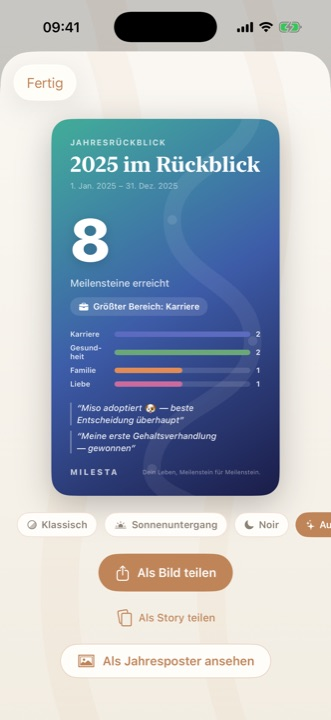
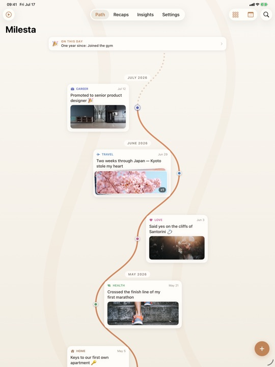
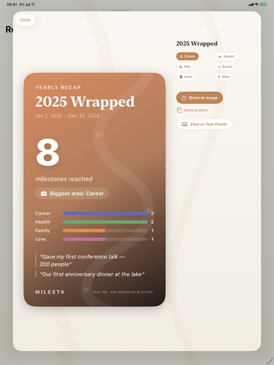

Press Kit
Everything on this page may be used freely in articles and reviews. No sign-up, no watermark.
The one-liner
Milesta turns your life's milestones into a beautiful winding path you scroll through — with cinematic story replay and Wrapped-style shareable recap cards. Everything stays on your device: no accounts, no cloud.
Factsheet
| App name | Milesta — Milestones Journal |
|---|---|
| Developer | Soner Şahin — solo developer, Germany |
| Released | July 29, 2026 |
| Platform | iPhone & iPad, iOS 18 or later |
| Price | Free download. Free tier: up to 20 milestones, the full path, photos, story replay, backups, and your latest monthly recap. Milesta Premium (optional subscription) adds unlimited milestones, all recaps, sharing and export, all themes and styles, and full insights. |
| Languages | 15 — English, German, Spanish, French, Portuguese (BR), Russian, Turkish, Arabic, Urdu, Hindi, Bengali, Japanese, Chinese (Simplified), Indonesian, Vietnamese — including full right-to-left support |
| Privacy | Local-first: no accounts, no cloud, no ads — journal entries never leave the device. Face ID lock. Local backups. Anonymous usage statistics are opt-in and off by default; the App Store privacy label reflects that as "Analytics and Purchases, not linked to you." |
| App Store | apps.apple.com/app/id6791968029 |
| Website | milesta.app |
| Contact | info@milesta.app |
Short description
Milesta is a private life journal for people who quit journaling: instead of daily entries, you log the moments that actually matter — a new job, a move, a first marathon — and Milesta renders them as a winding path you scroll through like a hiking trail of your own life. Monthly and yearly recaps become Wrapped-style cards. Everything stays on your iPhone: no accounts, no cloud, no ads.
Long description
Most journaling apps ask for 200 words a day and lose you by February. Milesta asks for maybe 20 milestones a year — and gives you something beautiful back. Every milestone becomes a waypoint on a winding trail, drawn across the seasons of your life. Tap play and a cinematic story replay turns your journey into a full-screen highlight reel. At the end of every month and every year, Milesta builds Wrapped-style recap cards, posters, and 9:16 story images designed to be shared.
Under the hood, Milesta takes the opposite bet of the big journaling platforms: it is local-first by design. There is no account to create and no cloud to sync to — your entries never leave the device. They are stored locally, protected with Face ID, and backed up with one-tap portable exports that cost nothing. The only data that ever leaves the phone is anonymous usage statistics, and only if you opt in. The app ships fully localized in 15 languages — including right-to-left Arabic and Urdu — built end-to-end by one developer in Germany.
What makes it different
- The path, not the page — your life renders as a scrollable winding trail, not a list of entries.
- Wrapped for your life — monthly, 6-month, and yearly recap cards built for sharing.
- Story replay — a cinematic, story-style highlight reel of your whole journey.
- Genuinely private — no accounts, no cloud, no ads; entries never leave the device, and analytics are opt-in.
- 15 languages, one developer — full localization including RTL, hand-built solo.
- Journaling for people who quit journaling — ~20 milestones a year instead of 200 words a day.
Screenshots
Click any image for the full-resolution PNG, or grab the complete zip. German versions available — more languages on request.
{kind=link}

{kind=link}

{kind=link}

{kind=link}

{kind=link}

{kind=link}

{kind=link}

{kind=link}

{kind=link}

{kind=link}

App icon
Download the app icon (1024×1024 PNG)
{kind=link}
About the developer
Milesta is designed, built, localized, and shipped by Soner Şahin, a solo developer based in Germany. The privacy stance is personal: a journal holding someone's whole life should not live on somebody else's server. Direct line for press: info@milesta.app — replies typically within a day.